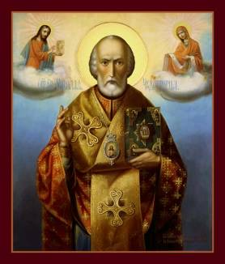

Legends of Kidnapped Children – Part 1
Basilios
Our story takes place many years ago in the seaport
city of Myra. The townspeople of Myra are celebrating the memory of St.
Nicholas (their beloved bishop) on the eve of his Feast Day with eating,
drinking and a generally festive air.
Unarmed and unaware of events around them, they
don’t realize that a band of Arab pirates from Crete has landed on their shore
and is making its way into the town. As they head toward the town proper, the
pirates discover a plum ripe for the picking. South of the city is the Church
of St. Nicholas. The pirates break into the church and collect booty in the
form of chalices, altar decorations and jewel-covered icons.
On their way back to the ship, the pirates can’t
resist one last act of cruelty. They seize Basilios, the son of a farmer, and
carry him off with them to Crete. When the emir of Crete sees their young
prisoner, he’s struck by the boy’s handsomeness. He chooses him on the spot to
be his personal cupbearer, thus making him part of his elaborate court and
household.
Back in Myra, his parents are deeply mourning the
loss of their son. His mother is so grieved that she can no longer think of the
Feast of St. Nicholas as anything but a day of tragedy.
A year goes by and still there is no word from young
Basilios. When the Feast Day arrives, the mother refuses at first to take part
in the celebrations at all. Finally her husband convinces her to at least
participate in the feast, although she can not bring herself to join the
festive crowd in the town square. The day is thus celebrated quietly at home.
Just as family and guests sit down to the evening
meal, their dogs begin to bark fiercely in the courtyard. They have seen or
scented something startling. The father moves cautiously to the courtyard door
and there, to his amazement bordering on terror, he sees his son, dressed in an
Arab tunic and holding a full wine goblet in his hand.
What contributes to the startling nature of his
ghostlike appearance is Basilios’ rigid stance. He stares uncomprehendingly
into space, immovable and not speaking. At last, when Basilios realizes that he’s
at his father’s house, back home in Myra, he snaps out of it, and his father
leads him inside to the rest of the family.
Obviously, the family is full of questions! Basilios
relates in detail what has occurred since his kidnapping. Each day he selected
the wines, poured them, and carried the cups of wine to the emir and his
entourage. Much as he did his job well and was liked by the emir, Basilios
despaired of ever returning to his family and friends.
Little did he realize that St. Nicholas was about to
rescue him. While engrossed in his usual routine, Basilios suddenly felt
himself lifted up, removed from the emir’s palace, and carried away – wine
goblet still in hand – by an invisible power. Basilios, not knowing what to
think, was afraid for his life. At that moment, St. Nicholas appeared. Facing
the boy, Nicholas blessed, comforted and encouraged him, then led him back to
the home of his family in Myra.
The Feast Day is now more than ever a day of praise
and rejoicing in Basilios’ family; the whole town joins in prayers of thanks to
God and to Nicholas who had been bishop of their town during his lifetime.
The Legend in Art: There is a picture by Giottino
in the lower Church of St. Francis in Assisi. In the upper part, on the left,
the young Basilios is standing humbly before the emir and his wife, with his
arms crossed, and on the right he is holding out the cup to the emir. St. Nicholas
is coming down from Heaven, seizing Basilios’ head, ready to bear him away. And
below, the family, sitting round a table, are greeting with gestures of
astonishment this young man who has come back. The mother has gotten up and is
holding out her arms to him.
Two Vatican manuscripts offer still another
variation. In this case, a widow by the name of Constantiai is the mother of
three boys. While they are preparing for the Feast of St. Nicholas, the
youngest of the three is kidnapped. He is imprisoned and out of reach of normal
rescue procedure. St. Nicholas, however – by adopting the identity of a young
man – is able to free the child and return him to his mother and brothers.
“There was another rich man that by the merits of Saint Nicholas had a son, and called him: Deus dedit, God gave. And this rich man did do make a chapel of Saint Nicholas in his dwellingplace; and did do hallow every year the feast of Saint Nicholas. And this manor was set by the land of the Agarians. This child was taken prisoner, and deputed to serve the king. The year following, and the day that his father held devoutly the feast of Saint Nicholas, the child held a precious cup tofore the king, and remembered his prise, the sorrow of his friends, and the joy that was made that day in the house of his father, and began for to sigh sore high. And the king demanded him what ailed him and the cause of his sighing; and he told him every word wholly. And when the king knew it he said to him: Whatsomever thy Nicholas do or do not, thou shalt abide here with us. And suddenly there blew a much strong wind, that made all the house to tremble, and the child was ravished with the cup, and was set tofore the gate where his father held the solemnity of Saint Nicholas, in such wise that they all demeaned great joy.
“And some say that this child was of Normandy, and went oversea, and was taken by the sowdan, which made him oft to be beaten tofore him. And as he was beaten on a Saint Nicholas day, and was after set in prison, he prayed to Saint Nicholas as well for his beating that he suffered, as for the great joy that he was wont to have on that day of Saint Nicholas. And when he had long prayed and sighed he fell asleep, and when he awoke he found himself in the chapel of his father, whereas was much joy made for him. Let us then pray to this blessed saint that he will pray for us to our Lord Jesu Christ which is blessed in secula seculorum. Amen. (The Golden Legend compiled by Jacobus de Voragine)
Thought to Ponder:
Thought to Discuss around the Dinner Table:
Legends of Kidnapped Children – Part 1
